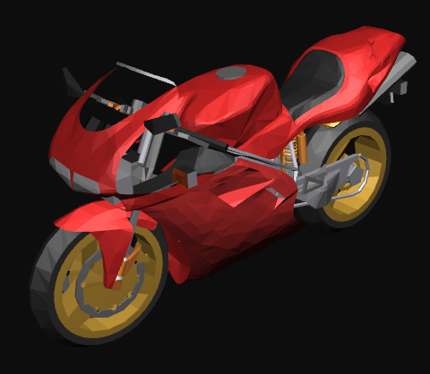

Synerzip is a Dual Shore Agile Product Development Partner Company which works on Bleeding Edge Technologies.
Synerzip has been working on Google Web Toolkit/Ajax since last 6 years, Android since last 3 years, HTML5 since last 2 years
and NoSQL and BigData since last year.
Continuous Learning of Bleeding Edge Technology is inherent part of Synerzip. Please see the WebGL Demos below to relate to R&D that happens in Synerzip
Introduction about WEG-GL at Synerzip
Web-GL Demos
-
-

Opportunities at Synerzip
People interested in Working in Bleeding Edge Technology please feel free to contact Synerzip
at "HR" <hr@synerzip.com>.
However the hiring bar @ Synerzip is High. We look for proactive individuals who do not limit their learning to the projects they work on.
Synerzip seeks individuals who themselves learn new technology and prove their metal on those.
We would like you to submit to us atleast one of the following with that email
- Your Work in HTML5, NodeJs,NoSQL or other bleeding edge technology. Your pet project will just great
- Your Blog or Article in this work
- Your GitHub Repositories with your work in Bleeding Edge
- Live WebSite/Mobile App in the above area
If you don't have any of the above, please create some and get in touch with Synerzip's HR